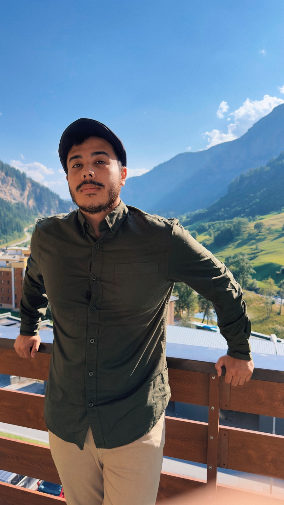
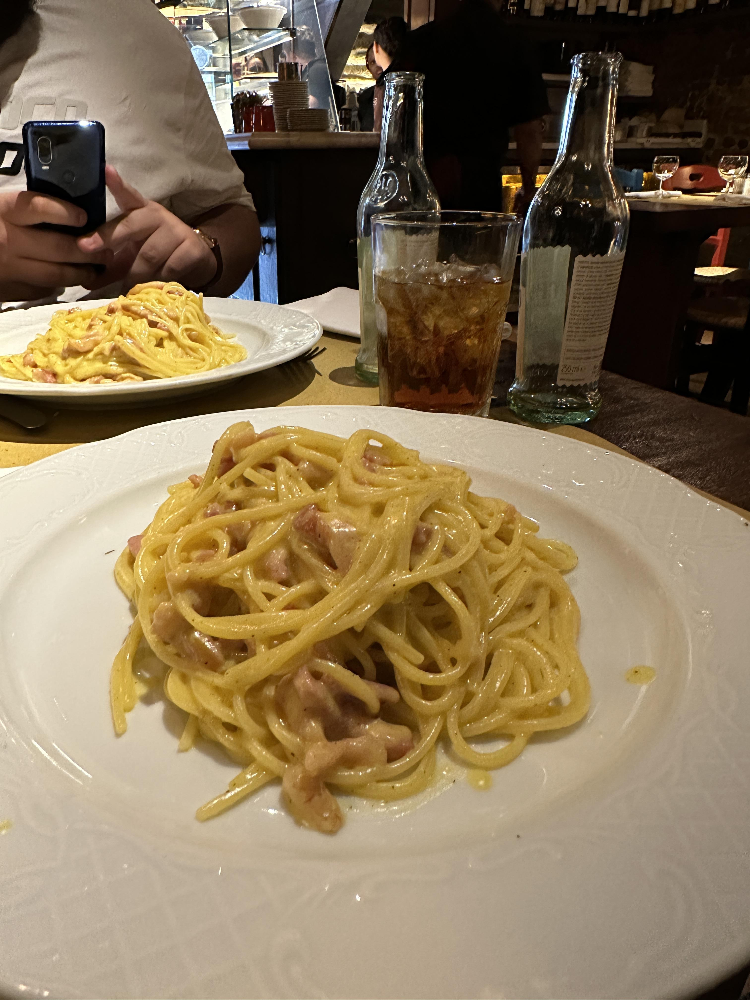
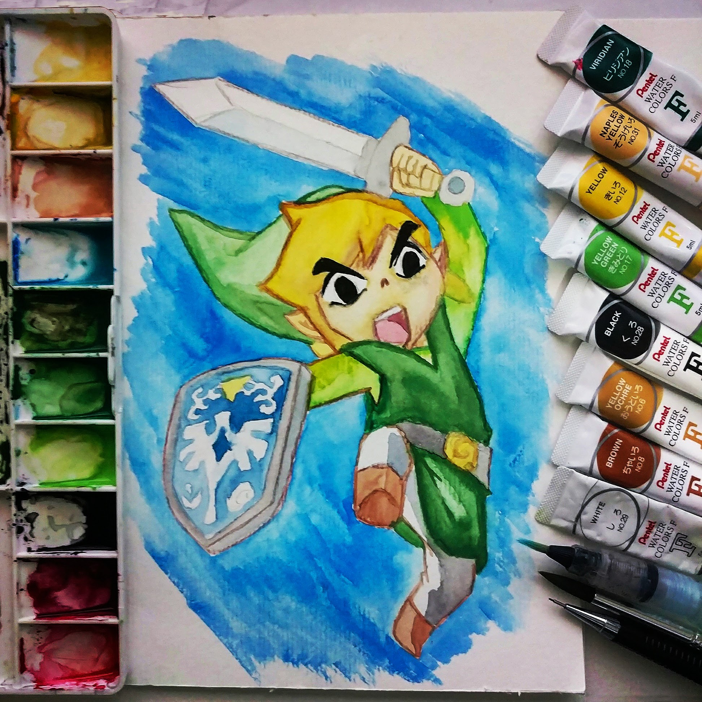
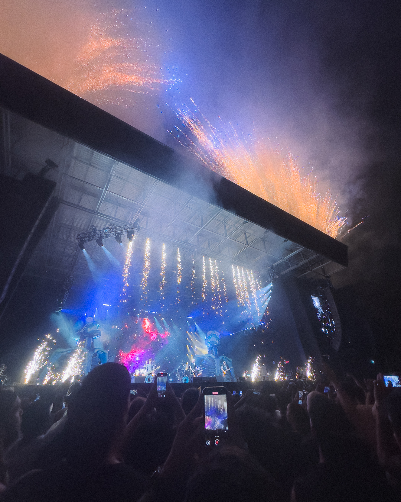
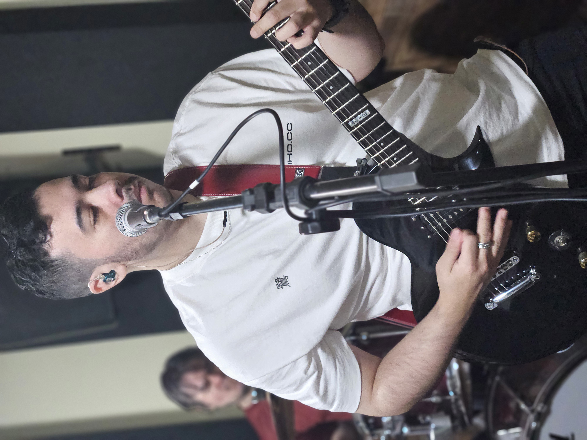
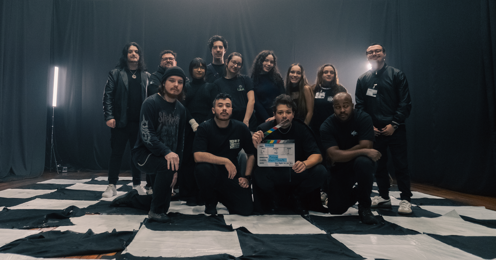
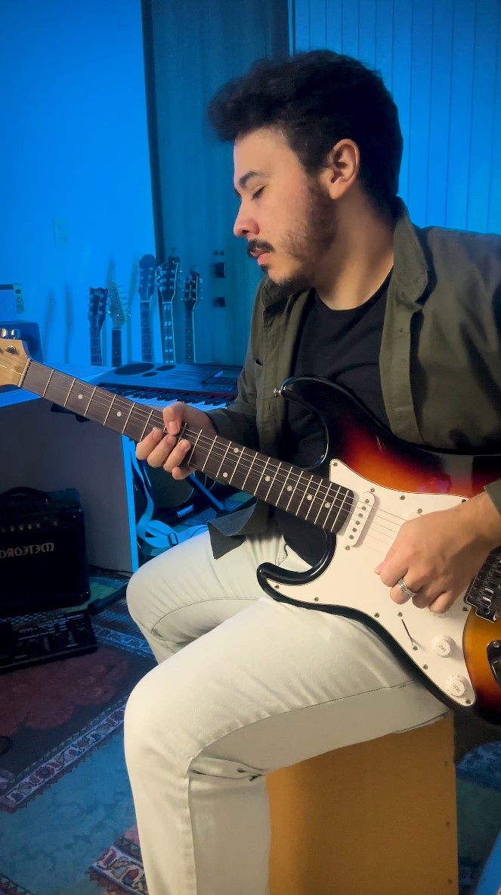
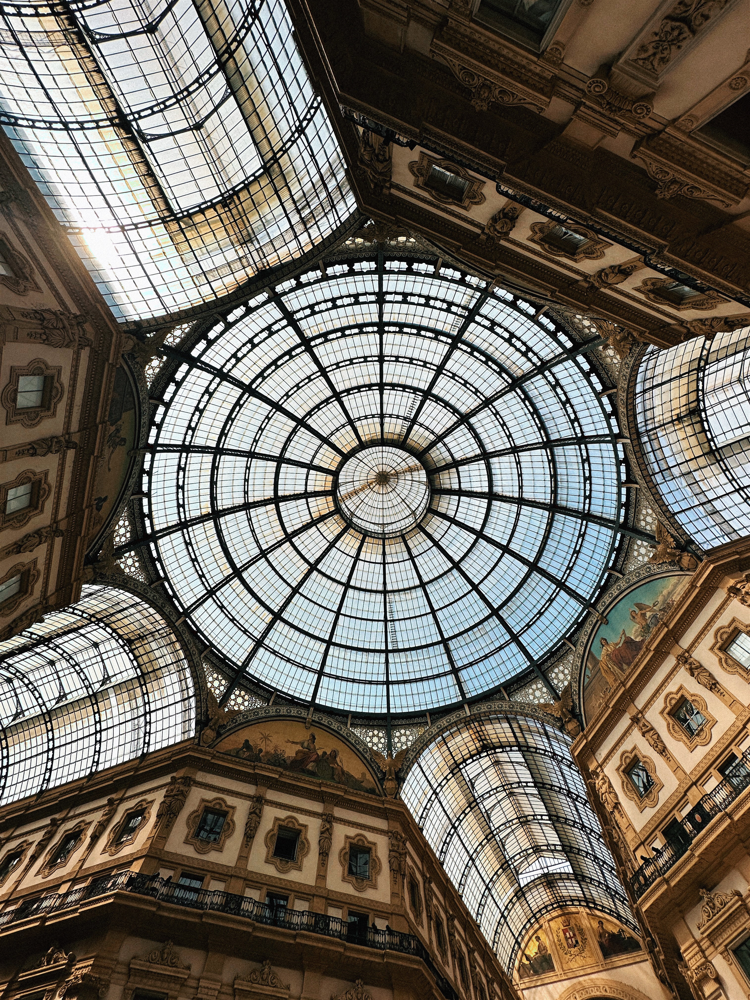
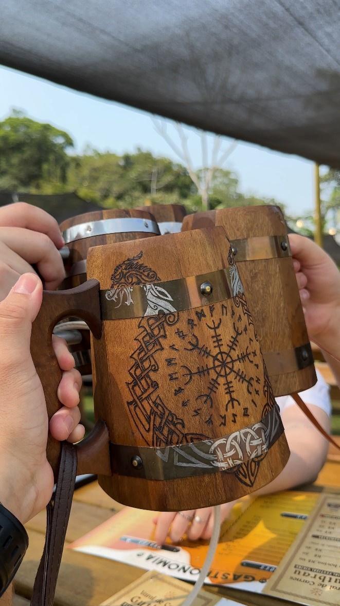

Lead Product Designer based in Joinville, Brazil, also a musician and always a storyteller.
I design digital products end to end, from research and strategy to interface and front-end code. Outside of product work, music and storytelling are quiet habits that shape how I think about rhythm, structure, and communication in design.
I'm a Product Designer with 11+ years across multiple disciplines: product design, design systems, data visualization, branding, front-end development, and audiovisual. That breadth isn't scattered: it's what lets me move between strategy and execution without losing the thread of either.
Most of my career has been spent entering companies with little to no design structure and leaving them with processes, systems, and culture that continue long after. I've built three product design sectors from scratch, created design systems adopted globally, and co-founded a software company whose first product is already running in schools across Brazil.
I believe design is fundamentally about storytelling: whether it's a product narrative, a dashboard that makes millions of data points readable, or a visual system that gives distributed teams a shared language. That's the same thread running through my music, my case studies, and how I run a design critique.

Professional travel planner. Execution rate: roughly 1 in 10.

Maker of what is very likely the best Carbonara on my street. Uncontested.

Games taught me storytelling before I knew that's what I was learning.
Commonly spotted behind a camera, quietly documenting things nobody asked me to.

If I'm not home, there's a good chance I'm at a festival somewhere.

I've been a musician for more than half my life. It started as a habit and never stopped.

Active part of the local music and audiovisual community, for better or worse.

Always chasing ways to collapse the line between audio and image into something new.
Always looking for another angle in the ordinary, one frame at a time.
Composing, writing, and spending an unreasonable amount of time thinking about time.

Architecture fan. The kind who walks slowly past buildings other people rush by.

Genuinely obsessed with medieval culture, history, and the aesthetics of that whole era.
Design is where I spend most of my hours, and most of my curiosity. I care about systems over screens: the logic, tokens, and patterns that make a product feel coherent at scale. I'm equally comfortable leading discovery, drawing the details, and writing the front-end code that brings a component to life.
Music has been part of my life for as long as design has. There's something about practicing an instrument, the patience, the repetition, the small adjustments, that maps directly onto how I approach design problems: iterate quietly until it feels right.
Whether it's a product, a song, a photograph, or a conversation, I'm always looking for the story underneath. Storytelling isn't a skill I use at work. It's how I move through the world and how I connect with the people in it.
Design is where I spend most of my hours, and most of my curiosity. I care about systems over screens: the logic, tokens, and patterns that make a product feel coherent at scale. I'm equally comfortable leading discovery, drawing the details, and writing the front-end code that brings a component to life.
Professional travel planner. Execution rate: roughly 1 in 10.
Maker of what is very likely the best Carbonara on my street. Uncontested.
Games taught me storytelling before I knew that's what I was learning.
Commonly spotted behind a camera, quietly documenting things nobody asked me to.
Music has been part of my life for as long as design has. There's something about practicing an instrument, the patience, the repetition, the small adjustments, that maps directly onto how I approach design problems: iterate quietly until it feels right.
If I'm not home, there's a good chance I'm at a festival somewhere.
I've been a musician for more than half my life. It started as a habit and never stopped.
Active part of the local music and audiovisual community, for better or worse.
Always chasing ways to collapse the line between audio and image into something new.
Whether it's a product, a song, a photograph, or a conversation, I'm always looking for the story underneath. Storytelling isn't a skill I use at work. It's how I move through the world and how I connect with the people in it.
Always looking for another angle in the ordinary, one frame at a time.
Composing, writing, and spending an unreasonable amount of time thinking about time.
Architecture fan. The kind who walks slowly past buildings other people rush by.
Genuinely obsessed with medieval culture, history, and the aesthetics of that whole era.
Experience
Co-founded a software company with two partners and built the entire design ecosystem from scratch. Led the end-to-end design of IncludED, a BNCC-compliant SaaS for creating and managing Individualized Education Plans (PEIs) for inclusion students. Built in close collaboration with a neuropsychologist and a pedagogical consultant with 20+ combined years inside schools. Already deployed in schools across Brazil.
Sole designer at a food-tech company with two core products: Gestor de Pedidos (restaurant management) and Pedir.Delivery (online menu with 10M+ monthly accesses and 4M+ monthly orders). Entered as freelancer via Estúdio 149 in January 2024, became fixed contractor in June 2024. Built the product design sector from scratch and deeply integrated design into the engineering workflow.
Joined as the first and lead product designer, building the product design sector from scratch. Led the design of Keepeye (KPI management SaaS) in a small team: two developers and a front-end developer transitioning into UX/UI. Led all design layers; collaborated on front-end implementation (Angular + Tailwind CSS) alongside the team. Also covered data visualization for global enterprise clients including Electrolux and Nidec.
Independent studio running in parallel with full-time roles. Covered digital products, visual identities, branding, photography, and audiovisual for local and global clients, including the early freelance work that became the Multipedidos contract.
Six years at one of Brazil's largest textile companies (founded 1907, 100+ year history), owning the full product lifecycle for licensed and original collections. Licensed brands included Marvel, Disney, Dragon Ball (Toei), Warner, and PlayStation. A constraint-driven, cross-functional environment where design decisions had direct consequences on the factory floor, and my first real experience of what it means to ship a product end-to-end.
First professional role, at a fast-paced express print studio. Handled hundreds of jobs per week across file closure, print preparation, and graphic creation, often delivering logos in under one hour and complete event kits (business card, flyer, folder) in two.
If you're looking for a Product Designer who can own a problem end to end, from research to a working interface, I'd love to hear about it.